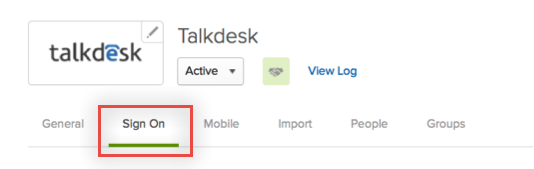
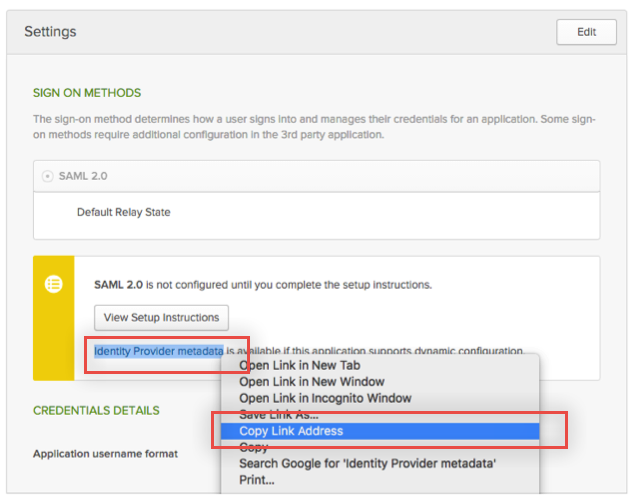
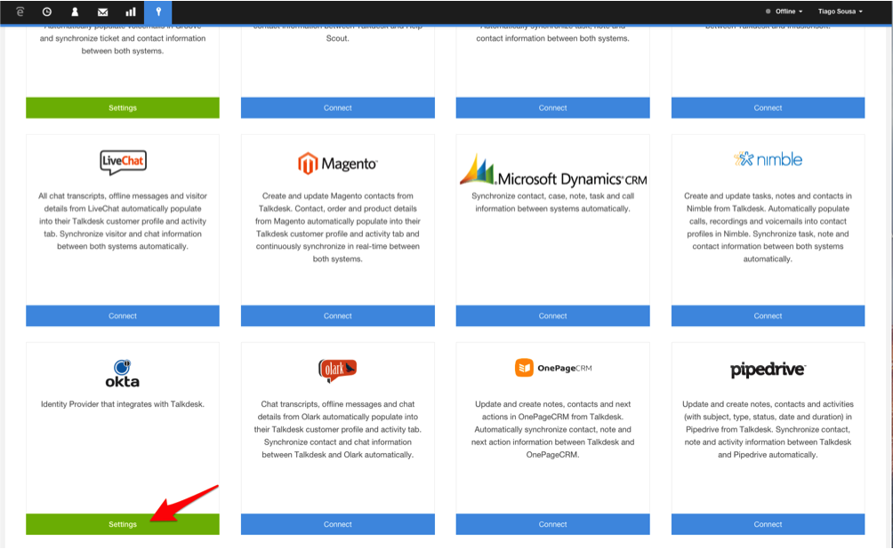
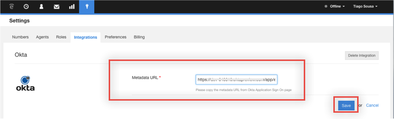
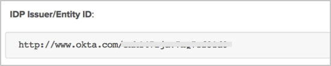
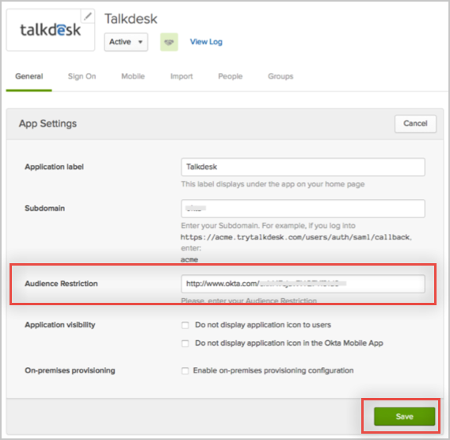

Log in to Talkdesk as an administrator.
Navigate to the Admin > Integrations section, then select the Okta integration:

Select the Configuration button, then enter the Metadata URL you copied from Okta in step 1, then click Save.

Talkdesk will automatically fetch your SSO credentials and save it for your account:
Sign into the Okta Admin Dashboard to generate this variable.


Done!
Notes:
IdP-initiated flows and SP-initiated flows are supported.
Just In Time (JIT) provisioning is not supported.